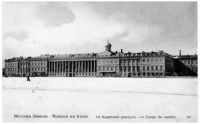

1-й Московский Императрицы Екатерины II кадетский корпус был учрежден 3 августа 1824 г. Однако его истинная история начинается значительно раньше – в 1778 г., когда в городе Шклове Могилевской губернии фаворитом Екатерины II генерал-лейтенантом С.Г. Зоричем было открыто Шкловское благородное училище.
С.Г. Зорич лично отбирал для училищапедагогов, многие из которых были приглашены из-за границы. Екатерина II высоко ценила высоко ценила выпускников училища и не вмешивалась в учебный процесс в нем. После смерти С.Г Зорича (1799), по указанию Павла I училище было переименовано в Шкловский кадетский корпус, а его директором назначен полковник В.К. Кетлер. 1 мая 1800 г. он получил распоряжение императора перевести корпус в Гродно, дворянство которого хотело иметь в своем городе кадетский корпус. После перевода в Гродно Шкловский кадетский корпус стал именоваться Отделением кадетского корпуса Гродненского (1800-1807). Многие воспитанники корпуса в Гродно занимали впоследствии важные государственные посты. Так, А.А. Закаревский стал губернатором Финляндии, министром внутренних дел и московским военным губернатором; М.И.И Лекс – товарищем министра внутренних дел; В.А. Марченко – государственным секретарем.
В конце 1806 г. по ходатайству дворян Смоленской губернии император Александр I распорядился перевести корпус в Смоленск. С 29 января 1807 г. корпус стал именоваться Смоленским кадетским корпусом (1807-1824). С началом Отечественной войны и приближением неприятеля к Смоленску, кадеты корпуса были эвакуированы первоначально в Тверь, затем – в Ярославль, и, наконец, - в Кострому. Здание корпуса в Смоленске и его обширная библиотека были сожжены французами при взятии города. В 1817 г. директор корпуса генерал-майор А.К. Готовцев стал ходатайствовать о переводе корпуса в Москву. В течение нескольких лет продолжался поиск подходящего здания. В конце концов, в июле 1824 г. корпус был переведен в Москву.

Здание 1-го Московского кадетского корпуса. Почтовая открытка. 1910 г. Из коллекции В.А.Гурковского
3 августа 1824 г. корпусу было повелено именоваться Московским кадетским корпусом (1824-1838). Он был размещен в Лефортово в Екатерининских казармах бывшего Головинского дворца, построенного в 1773-1796 гг. архитекторами А. Ринальди, Дж. Кваренги и Ф. Кампорези.
Среди выпускников того периода особо стоит отметить выдающегося художника П.А. Федотова, окончившего корпус в 1833 г.
С 1838 г. в связи с учреждением в Москве еще одного кадетского корпуса Московский кадетский корпус стал называться 1-м Московским кадетским корпусом (1838-1863) и ему была пожалована скоба на знамя с вензелем Екатерины II. 2 апреля 1844 г. корпус получил новое знамя, а старое было помещено на хранение в церковь корпуса.
Ротный зал, столовая, вестибюль, спальня 1-го Московского кадетского корпуса. Почтовая открытка из коллекции В.А. Гурковского. 1903 г.
Пруд в Лефортовском парке весной, здание кадетского корпуса, летний лагерь в Коломенском, на спортивном городке в Лефортове.Почтовая открытка из коллекции В.А. Гурковского. 1903 г.
На прогулке во дворе 1-го Московского кадетского корпуса, в спортивном городке, на занятиях по гимнастике в спортивном зале. Почтовая открытка из коллекции В.А. Гурковского. 1903 г.
В столярной мастерской, на лужайке в лагере в Коломенском, духовой оркестр корпуса. Почтовая открытка из коллекции В.А. Гурковского. 1903 г.
17 мая 1864 г. в связи с проводимыми в стране реформами военного образования был преобразован в 1-ю Московскую военную гимназию и продолжал существовать с этим названием до 28 июня 1882 г., когда он был вновь переименован в 1-й Московский кадетский корпус (1882-1903).
С 5 ноября 1903 г. корпус, отметивший свой 125-летний юбилей, по повелению императора Николая II стал именоваться 1-м Московским Императрицы Екатерины II кадетским корпусом (1903-1918).В 1900-х годах в корпусе обучался второй сын великого князя Константина Константиновича князь Гавриил.
Из выпускников корпуса 14 человек были удостоены ордена Св. Георгия. В 1912 г. корпус окончил один из первых Маршалов Советского Союза М.Н. Тухачевский.
В 1918 г. 1-й Московский Императрицы Екатерины II кадетский корпус прекратил свое сущестование.